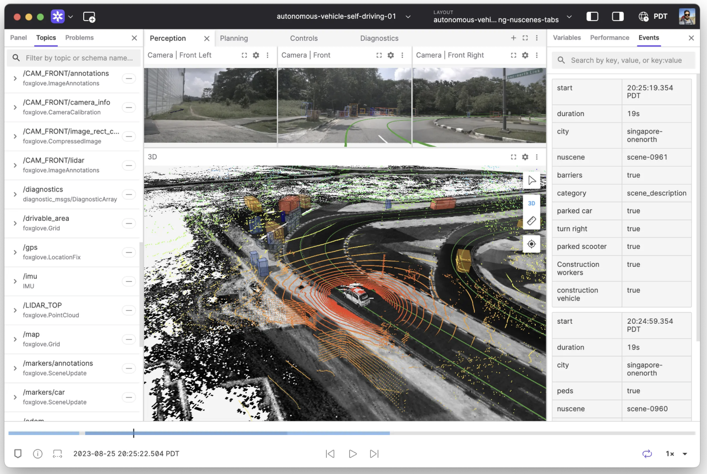
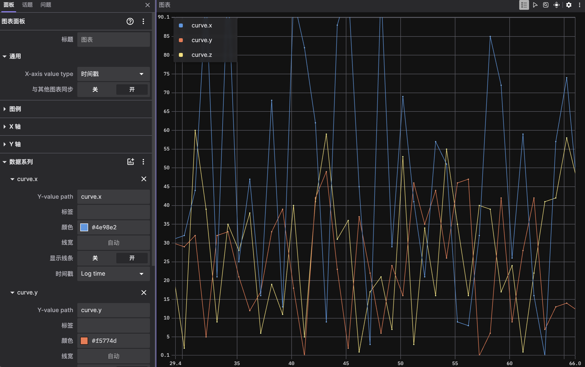

6. Foxglove
Foxglove Studio 是面向机器人的多模态数据可视化与调试工具，支持 ROS 1/2、MCAP 及 WebSocket 实时连接。
6.1 核心能力
功能 |
说明 |
|---|---|
多模态面板 |
3D 视图、点云、图像、Plot、日志 |
数据源 |
实时 WebSocket、离线 bag/MCAP 拖拽 |
协作 |
布局保存与共享 |
扩展 |
自定义 JavaScript 面板 |

6.2 与 Autonomy 的接入方式
Autonomy 当前无内置 Foxglove 服务。推荐路径：
libautonomy
→ autonomy_ros（ROS 2 话题）
→ ros-foxglove-bridge
→ ws://host:8765
→ Foxglove Studio
安装 foxglove_bridge
Docker 镜像构建时可选安装（docker/install/install_ros2.sh）：
sudo apt install ros-humble-foxglove-bridge
# 或
ros2 run foxglove_bridge foxglove_bridge
连接 Studio
Open connection → Foxglove WebSocket
输入
ws://localhost:8765（Docker 已映射时）
离线调试：将 MCAP / bag 文件拖入 Studio 窗口。
6.3 推荐面板布局
面板 |
订阅 |
用途 |
|---|---|---|
3D |
|
导航全貌 |
Plot |
|
控制曲线 |
Image |
|
视觉 |
Raw Messages |
任意 |
排错 |

6.4 规划 API（未实现）
历史文档中的 VisualizationServer 为设计示例，头文件 autonomy/visualization/visualization_server.hpp 不存在：
// 规划 API — 尚未实现
#include "autonomy/visualization/visualization_server.hpp"
auto server = std::make_shared<VisualizationServer>(options);
server->Publish<commsgs::planning_msgs::Path>("/planning/path", std::move(path));
接入后将从 config/visualization/visualization.lua 读取 host/port 与 topic 列表。
6.5 MCAP
docker/install/install_mcap.sh 安装 Foxglove MCAP C++ 头与 Python 包，供未来录制回放；当前 C++ 代码无 MCAP API 调用。
6.6 相关文档
15 Bridge · 综述（与 foxglove_bridge 对标）